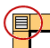
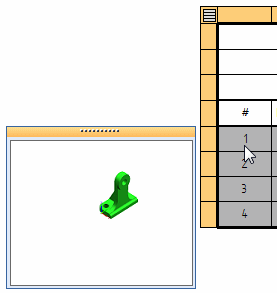
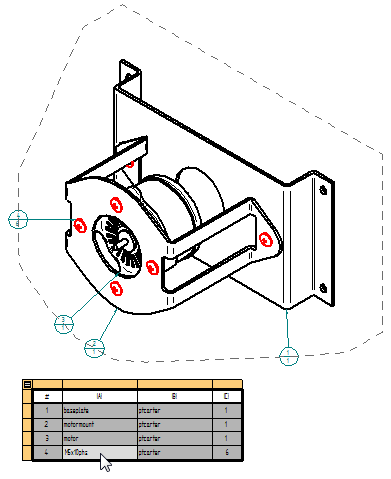
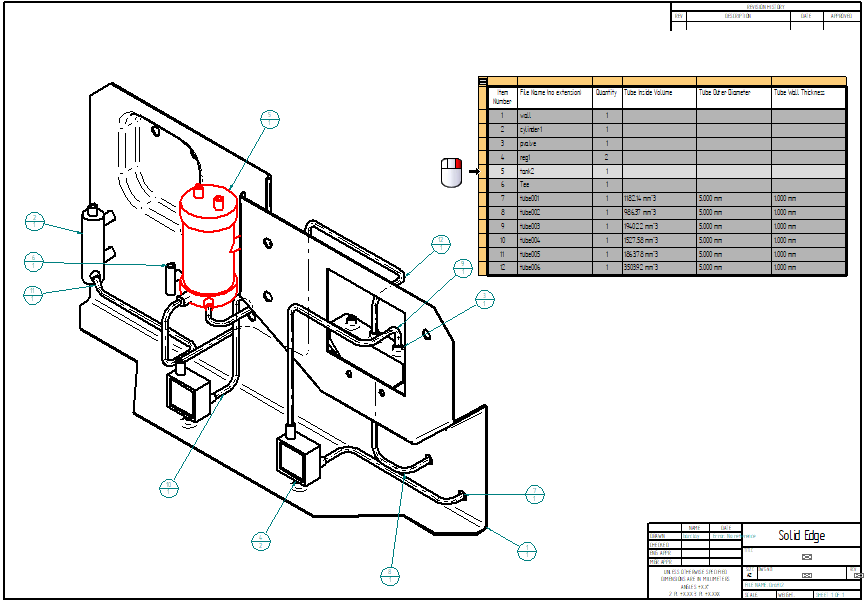
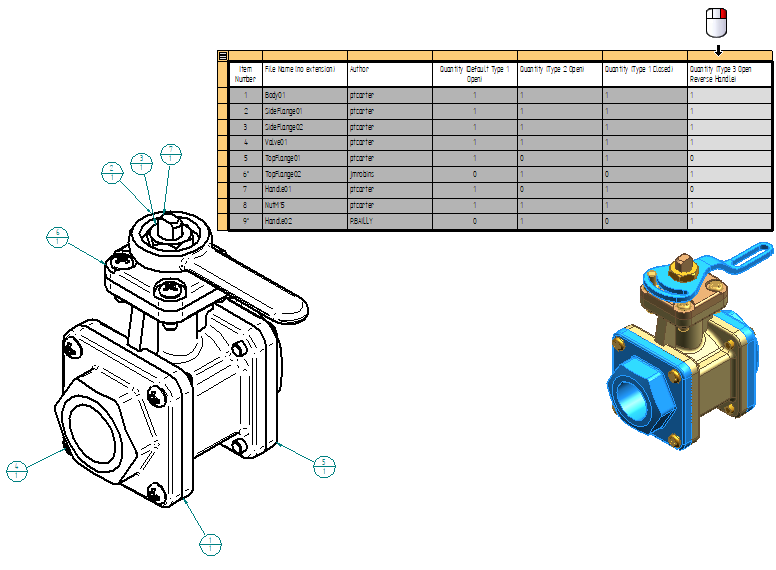
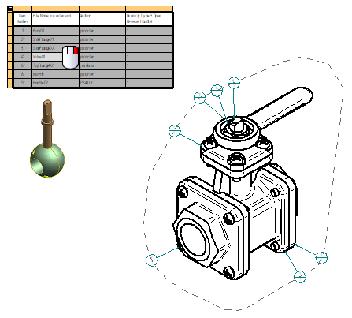

Open a model from a parts list
You can double-click a parts list to display an orange edit frame, which you can use to identify and highlight parts corresponding to a parts list. You also can open a part model associated with an item number, or an assembly model associated with a FOA member.
Click outside the parts list border to dismiss the edit frame.
Show thumbnails of parts in the parts list
-
Double-click a parts list to display its orange edit frame.
-
Right-click this button

to display the shortcut menu, and then choose Thumbnails. -
Move your cursor down the rows in the parts list to see an image of each item in a thumbnail window.

If an image of the model is not available, such as when the draft document is opened using the option, Inactivate drawing views for review, then the thumbnail window is blank.
Highlight parts in the assembly drawing view
-
Double-click a parts list.
-
Right-click this button to display the shortcut menu, and then choose Highlight.
-
Click a cell or row in the parts list.
The corresponding part is highlighted in the drawing view.

Open a model document from a parts list
You can directly open the part document associated with an Item Number row in a parts list. In a Family of Assemblies parts list, you also can open an assembly document associated with a FOA member Quantity column, even when the member is not shown in the drawing view referenced by the parts list.
-
Double-click a parts list to activate it and display the orange edit frame.
-
(Optional) Use the Highlight command on this context menu to locate an item in the parts list that you want to open:
-
Do one of the following:
-
To open a part model, right-click the orange cell in the edit frame row that is associated with an item number, or right-click any cell in that row, and choose Open <file name> from its context menu.

-
To open a member of a FOA, right-click a cell that is associated with a member quantity column, and choose Open <path name><file name> from its context menu. Use this technique to open an assembly member that is not represented in the drawing view.

-
You also can open a part in the FOA represented in the parts list by right-clicking a cell containing the part name and selecting the Open ><file name> command.

-
The model document associated with the selected item number or member quantity column is opened in a new document tab in Solid Edge.
How do I
Create a parts listCreate a subassembly parts list
Create an exploded parts list
Create a total length parts list
Create a parts list for flexible hoses and tubing
Create a family of assemblies parts list
Exclude parts from an exploded parts list
Example: Show custom occurrence properties in a parts list
Example: Show custom properties and materials in a parts list
Example: Show sheet metal material thickness in a parts list
Renumber a parts list
Change the active parts list
Display assembly occurrences in a drawing view or parts list
Convert a parts list to a table
Copy a parts list to the clipboard
Learn more
Parts listsFamily of Assemblies (FOA) parts lists
Assembly part views and parts lists
Subassembly drawing views and parts lists
Exploded parts lists
Custom occurrence properties in parts lists
Occurrence quantity overrides in parts lists
Item numbers in parts lists
Saving and reusing the parts list format
Look up more details
Parts List commandParts List command bar
Parts List Properties dialog box
Copy Contents command
Convert To Table command